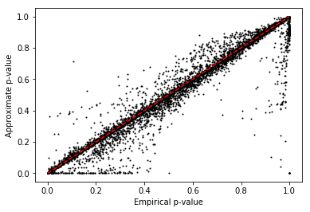

QTL mapping pipeline
Introduction
Here, we set up the infrastructure to call mean and variance QTLs.
We previously estimated means and dispersions per individual, per gene. We now fit log linear models for each:
\[ \ln \mu_{ik} = X \beta_\mu + \epsilon_\mu \]
\[ \ln \phi_{ik} = X \beta_\phi + \epsilon_\phi \]
where \(\mu_{ik}, \phi_{ik}\) are the mean and dispersion for individual \(i\), gene \(k\), \(X\) is the genotype matrix (\(n \times 1)\), and \(\beta_\mu, \beta_\phi\) are the effect sizes (scalar).
Genotype processing
QTLtools reported 0 variants in cis for an unexpected number of genes when
using the provided genotype file, so reprocess the genotypes to fix it.
sbatch --partition=broadwl --job-name process-geno #!/bin/bash set -e source activate scqtl zcat /project/compbio/jointLCLs/genotype/hg19/YRI/vcf/chr{?,??}.hg19.vcf.gz | awk 'BEGIN {print "##fileformat=VCFv4.1"} NR == 1 || ! /CHROM/ {print}' | bgzip >genotypes.vcf.gz tabix genotypes.vcf.gz
Mean-QTL calling
Read the estimated parameters (phenotypes) then center them.
mean = (pd.read_table('/scratch/midway2/aksarkar/singlecell/zi2-mean.txt.gz', sep=' ', index_col=0) .transform(lambda x: x - x.mean(), axis=1))
Write out the phenotype file for qtltools.
gene_info = (pd.read_table('/home/aksarkar/projects/singlecell-qtl/data/scqtl-genes.txt.gz') .set_index('gene') .query('source == "H. sapiens"') .query('chr != "hsX"') .query('chr != "hsY"') .query('chr != "hsMT"')) gene_info.head()
chr start end name strand source gene ENSG00000000419 hs20 49551404 49575092 DPM1 - H. sapiens ENSG00000000457 hs1 169818772 169863408 SCYL3 - H. sapiens ENSG00000000460 hs1 169631245 169823221 C1orf112 + H. sapiens ENSG00000000938 hs1 27938575 27961788 FGR - H. sapiens ENSG00000000971 hs1 196621008 196716634 CFH + H. sapiens
def qtltools_format(row): row['#Chr'] = 'chr{}'.format(row['chr'][2:]) row['gid'] = row.name row['pid'] = row.name return row def write_pheno_file(pheno, gene_info, output_file, holdout=True): if holdout: genes = gene_info.loc[gene_info['chr'].apply(lambda x: bool(int(x[2:]) % 2)).values] else: genes = gene_info (genes .apply(qtltools_format, axis=1) .merge(pheno, left_index=True, right_index=True) .to_csv(output_file, sep='\t', columns=['#Chr', 'start', 'end', 'pid', 'gid', 'strand'] + list(pheno.columns), header=True, index=False, index_label=False) )
write_pheno_file(mean, gene_info, '/scratch/midway2/aksarkar/singlecell/mean.bed')
Index the phenotype file.
export input=$input sbatch --partition=$partition --wait #!/bin/bash sort -k1,1 -k2,2n -k3,3n $input | bgzip >$input.gz tabix -p bed $input.gz
Run the QTL mapping, using the approximate permutation test implemented in
QTLtools.
export pheno=$pheno sbatch --partition=$partition -N1 -c16 -J $pheno-qtl -o $pheno-qtl.log #!/bin/bash source activate scqtl module load parallel parallel -j16 qtltools cis --vcf /project2/gilad/singlecell-qtl/bulk/genotypes.vcf.gz --bed $pheno.bed.gz --permute=100 --chunk {#} 100 --out $pheno-qtl.{#}.txt ::: $(seq 1 100)
Read the results.
def read_qtltools_output(pheno): file_names = ['{}-qtl.{}.txt'.format(pheno, i) for i in range(1, 101)] return (pd.concat([pd.read_table(f, header=None, sep=' ') for f in file_names if os.path.exists(f) and os.path.getsize(f) > 0]) .rename(columns={i: x for i, x in enumerate( ['gene', 'chr', 'start', 'end', 'strand', 'num_vars', 'distance', 'id', 'var_chr', 'var_start', 'var_end', 'df', 'dummy', 'a', 'b', 'p_nominal', 'beta', 'p_empirical', 'p_beta'] )}) .sort_values('p_beta'))
mean_qtls = read_qtltools_output('mean')
Apply the Benjamini-Hochberg procedure:
def bh(df): return df['p_beta'] < .05 * np.arange(1, df.shape[0] + 1) / df.shape[0]
keep_mean_qtls = bh(mean_qtls) keep_mean_qtls.sum()
189
mean_qtls[keep_mean_qtls].merge(gene_info, left_on='gene', right_index=True)[['gene', 'name', 'id', 'beta', 'p_beta']]
gene name id beta p_beta 42 ENSG00000162517 PEF1 rs115438012 -0.614188 0.000000e+00 49 ENSG00000121486 TRMT1L rs73059600 7.770620 0.000000e+00 34 ENSG00000151502 VPS26B rs59014772 9.085280 0.000000e+00 26 ENSG00000088280 ASAP3 rs142168595 8.061380 2.311830e-311 60 ENSG00000154814 OXNAD1 rs186345075 6.056120 1.244260e-248 47 ENSG00000169515 CCDC8 rs115292552 8.416460 1.162980e-247 30 ENSG00000105732 ZNF574 rs138978828 6.917230 1.363250e-222 36 ENSG00000146067 FAM193B rs191336763 6.666040 5.046890e-222 0 ENSG00000118197 DDX59 rs189972380 9.531930 5.553180e-201 26 ENSG00000086300 SNX10 rs193043296 5.148360 4.541970e-176 7 ENSG00000144909 OSBPL11 rs142359735 6.324380 4.300360e-166 32 ENSG00000198466 ZNF587 rs138158391 6.448550 1.089520e-163 43 ENSG00000142556 ZNF614 rs57469094 10.462400 2.407550e-157 22 ENSG00000116337 AMPD2 rs115795881 8.250020 1.059290e-152 24 ENSG00000152601 MBNL1 rs151091865 7.133200 1.156550e-150 31 ENSG00000028277 POU2F2 rs141805699 6.914220 2.546100e-134 27 ENSG00000105671 DDX49 rs56165767 3.878050 2.622660e-115 12 ENSG00000002822 MAD1L1 rs77575700 6.492050 8.173360e-83 49 ENSG00000116793 PHTF1 rs114564397 5.112960 9.314330e-79 6 ENSG00000162636 FAM102B rs481848 -4.752180 8.336260e-78 0 ENSG00000171612 SLC25A33 rs2401422 4.831560 8.401550e-75 45 ENSG00000116667 C1orf21 rs190731151 5.134630 4.383330e-58 62 ENSG00000162623 TYW3 rs28602706 -0.440675 2.126720e-51 22 ENSG00000131503 ANKHD1 rs58190825 4.887060 1.848730e-48 6 ENSG00000137726 FXYD6 rs190517409 5.676260 5.540640e-47 33 ENSG00000175567 UCP2 rs80217992 -0.330121 7.408280e-47 57 ENSG00000156876 SASS6 rs149086207 0.771629 8.289340e-41 27 ENSG00000134086 VHL rs115909610 3.021960 1.079410e-40 19 ENSG00000169136 ATF5 rs142916709 9.093010 1.342720e-38 63 ENSG00000169733 RFNG rs116264601 7.291060 4.530920e-31 .. ... ... ... ... ... 32 ENSG00000162585 C1orf86 rs436543 0.117010 6.688970e-04 17 ENSG00000106853 PTGR1 rs7028222 -0.247891 6.997520e-04 36 ENSG00000160685 ZBTB7B rs12134456 -7.110410 7.170970e-04 21 ENSG00000130770 ATPIF1 rs530426 -0.094513 7.544320e-04 17 ENSG00000166938 DIS3L rs79824500 8.834890 8.095130e-04 13 ENSG00000253797 UTP14C rs115432565 0.381140 8.122250e-04 29 ENSG00000136856 SLC2A8 rs149587918 5.056830 8.605430e-04 21 ENSG00000165140 FBP1 rs10989709 -8.628560 9.267410e-04 30 ENSG00000269343 ZNF587B rs188747487 8.310020 9.522340e-04 5 ENSG00000085491 SLC25A24 rs607101 -0.146611 9.530610e-04 8 ENSG00000182973 CNOT10 rs6788735 -0.132575 9.827390e-04 28 ENSG00000150753 CCT5 rs2548546 -0.105278 9.926300e-04 19 ENSG00000169174 PCSK9 rs77965618 6.162400 1.024780e-03 8 ENSG00000127184 COX7C rs12332473 0.074714 1.052670e-03 55 ENSG00000117118 SDHB rs12066331 -0.221960 1.057660e-03 9 ENSG00000137880 GCHFR rs190530286 4.580140 1.085450e-03 47 ENSG00000198799 LRIG2 rs144581772 0.748893 1.144320e-03 0 ENSG00000153885 KCTD15 rs146198944 2.407710 1.182870e-03 25 ENSG00000134809 TIMM10 rs2454664 -0.263685 1.202400e-03 6 ENSG00000086062 B4GALT1 rs1125479 0.229450 1.218740e-03 23 ENSG00000213523 SRA1 rs778591 -0.144387 1.301270e-03 21 ENSG00000267645 POLR2J2 rs183117024 -8.381680 1.314740e-03 42 ENSG00000116489 CAPZA1 rs1994604 0.099928 1.353860e-03 12 ENSG00000185787 MORF4L1 rs8039144 -0.083248 1.362930e-03 40 ENSG00000150401 DCUN1D2 rs74999777 6.601230 1.363650e-03 61 ENSG00000116791 CRYZ rs28594379 -0.670421 1.408140e-03 23 ENSG00000134153 EMC7 rs17237191 -0.373564 1.419180e-03 36 ENSG00000166444 ST5 rs181100237 6.130040 1.477240e-03 47 ENSG00000121775 TMEM39B rs111714251 7.927280 1.505640e-03 63 ENSG00000249992 TMEM158 rs73829696 9.665750 1.544280e-03 [189 rows x 5 columns]
Check the beta approximation to the permutation p-values:
plt.clf() plt.scatter(mean_qtls['p_empirical'], mean_qtls['p_beta'], s=1, c='k') plt.plot([0, 1], [0, 1], c='r', ls='--') plt.xlabel('Empirical p-value') plt.ylabel('Approximate p-value')
Text(0,0.5,'Approximate p-value')

Plot the quantile-quantile plot of QTL test statistics:
def qqplot(x): y = -np.log10(x[np.logical_and(np.isfinite(x), x > 0)]) y = y[np.isfinite(y)] n = y.shape[0] plt.clf() plt.scatter(np.flip(-np.log10(np.linspace(0, 1, n + 1)[1:]), -1), np.sort(y), s=1, c='k') plt.plot([0, np.log10(n)], [0, np.log10(n)], color='r', ls='dashed') plt.xlabel('Expected -$\log_{10}(p)$') plt.ylabel('Observed -$\log_{10}(p)$')
qqplot(mean_qtls['p_beta'])

Dispersion-QTL calling
Read the estimated parameters and center them.
disp = (pd.read_table('/scratch/midway2/aksarkar/singlecell/zi2-dispersion.txt.gz', sep=' ', index_col=0) .transform(lambda x: x - x.mean(), axis=1))
write_pheno_file(disp, gene_info, '/scratch/midway2/aksarkar/singlecell/disp.bed')
Index the phenotype file.
Submitted batch job 43380178
Run qtltools.
Submitted batch job 43380210
Read the output.
disp_qtls = read_qtltools_output('disp') keep_disp_qtls = bh(disp_qtls) keep_disp_qtls.sum()
98
disp_qtls[keep_disp_qtls].merge(gene_info, left_on='gene', right_index=True)[['gene', 'name', 'id', 'beta', 'p_beta']]
gene name id beta p_beta 29 ENSG00000165283 STOML2 rs151013351 -3.309280 0.000000e+00 11 ENSG00000170085 SIMC1 rs115194011 -4.063380 0.000000e+00 18 ENSG00000197724 PHF2 rs113363990 -4.412720 7.294860e-228 23 ENSG00000174405 LIG4 rs115154048 -5.077620 2.507990e-182 51 ENSG00000176697 BDNF rs143827698 -4.773690 2.225750e-170 21 ENSG00000123810 B9D2 rs79026999 -4.370730 1.672330e-151 17 ENSG00000102743 SLC25A15 rs115773631 -3.519380 6.031130e-123 47 ENSG00000125449 ARMC7 rs75902792 -4.630780 6.994600e-88 58 ENSG00000143183 TMCO1 rs114697800 -2.691680 4.711220e-50 40 ENSG00000105865 DUS4L rs187529047 2.818420 1.040130e-44 28 ENSG00000120314 WDR55 rs11167791 3.441270 2.458160e-42 18 ENSG00000164970 FAM219A rs78437190 -2.935010 2.794990e-37 28 ENSG00000162909 CAPN2 rs2172360 3.311410 9.247940e-35 46 ENSG00000170860 LSM3 rs143962723 -3.295380 2.297400e-33 24 ENSG00000244165 P2RY11 rs76392887 -3.159010 1.709660e-32 27 ENSG00000116898 MRPS15 rs144661059 -2.239470 1.479050e-28 11 ENSG00000160049 DFFA rs5007607 -2.658710 4.592440e-26 2 ENSG00000171608 PIK3CD rs138247028 -4.697440 4.235250e-25 50 ENSG00000117143 UAP1 rs12067012 1.433560 3.856740e-23 29 ENSG00000205356 TECPR1 rs116757663 -2.618370 9.657750e-18 33 ENSG00000114859 CLCN2 rs116709730 4.131380 1.859410e-17 21 ENSG00000172830 SSH3 rs7105623 -0.638843 4.644960e-17 29 ENSG00000183020 AP2A2 rs186982458 2.609980 2.456720e-16 26 ENSG00000125734 GPR108 rs184583582 -2.822690 2.470850e-15 36 ENSG00000161682 FAM171A2 rs12944040 2.363410 3.075220e-15 3 ENSG00000179409 GEMIN4 rs2293067 1.929650 8.587390e-15 25 ENSG00000223802 CERS1 rs116562609 -3.084010 1.026820e-13 26 ENSG00000172273 HINFP rs115425447 1.686380 1.513860e-13 60 ENSG00000205309 NT5M rs8511 -2.068040 2.680890e-13 10 ENSG00000197043 ANXA6 rs139372973 3.311060 7.743520e-13 .. ... ... ... ... ... 22 ENSG00000248098 BCKDHA rs140346884 -2.913330 2.763770e-05 56 ENSG00000143198 MGST3 rs144467420 -2.748340 4.538870e-05 45 ENSG00000174574 AKIRIN1 rs143588389 -2.988750 6.604600e-05 7 ENSG00000103707 MTFMT rs137966506 3.245180 6.846880e-05 6 ENSG00000145681 HAPLN1 rs114887660 -3.971260 7.128160e-05 65 ENSG00000184408 KCND2 rs143795479 -4.538730 8.513240e-05 43 ENSG00000137841 PLCB2 rs62019961 -4.512630 8.853740e-05 63 ENSG00000108557 RAI1 rs59212772 -6.439100 1.211490e-04 20 ENSG00000006016 CRLF1 rs10414298 -1.853580 1.396770e-04 16 ENSG00000109084 TMEM97 rs144069393 -2.782690 1.462980e-04 38 ENSG00000106086 PLEKHA8 rs118033320 2.487410 1.639470e-04 14 ENSG00000116906 GNPAT rs10779810 -1.170110 1.677310e-04 13 ENSG00000064666 CNN2 rs184326775 -1.410370 1.764350e-04 63 ENSG00000149256 TENM4 rs189331375 -4.245470 1.807590e-04 16 ENSG00000117036 ETV3 rs188035981 3.118750 1.978480e-04 44 ENSG00000073050 XRCC1 rs138843872 3.159450 2.268670e-04 20 ENSG00000185453 C19orf68 rs138701164 4.117920 2.468340e-04 37 ENSG00000166452 AKIP1 rs141004297 3.508760 2.546470e-04 12 ENSG00000092978 GPATCH2 rs113462534 4.085070 2.997230e-04 64 ENSG00000131473 ACLY rs111713404 -2.099470 3.098620e-04 23 ENSG00000160867 FGFR4 rs111567185 2.796980 3.604680e-04 46 ENSG00000186472 PCLO rs78573728 -4.342580 3.955380e-04 18 ENSG00000132510 KDM6B rs115083985 -1.067740 4.668840e-04 27 ENSG00000070669 ASNS rs79183163 -2.619050 4.672200e-04 27 ENSG00000105671 DDX49 rs147349438 1.518330 5.734510e-04 29 ENSG00000165895 ARHGAP42 rs111702886 -4.671170 5.748990e-04 22 ENSG00000166333 ILK rs77801446 -2.310190 7.091510e-04 20 ENSG00000148110 HIATL1 rs9409727 -1.103750 8.033820e-04 40 ENSG00000117906 RCN2 rs8026731 -1.355620 8.237700e-04 55 ENSG00000085276 MECOM rs140988682 -4.053850 8.395570e-04 [98 rows x 5 columns]
Check the beta approximation to the permutation p-values:
plt.clf() plt.scatter(disp_qtls['p_empirical'], disp_qtls['p_beta'], s=1, c='k') plt.plot([0, 1], [0, 1], c='r', ls='--') plt.xlabel('Empirical p-value') plt.ylabel('Approximate p-value')
Text(0,0.5,'Approximate p-value')

Plot the quantile-quantile plot of QTL test statistics:
qqplot(disp_qtls['p_beta'])